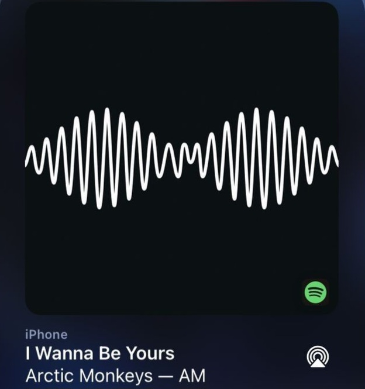
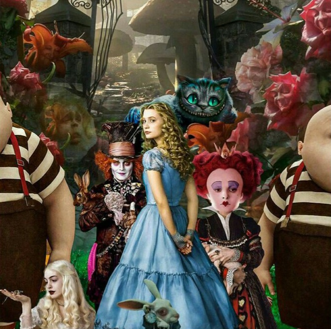

|
Meu nome é Mariana Eduarda, sou uma aluna do Colégio Civíco-MIlitar Vila Guaíra e estou cursando o 2º ano do ensino médio. |
|
Meu nome é Mariana Eduarda, sou uma aluna do Colégio Civíco-MIlitar Vila Guaíra e estou cursando o 2º ano do ensino médio. |


| Comida | Esporte | Hobbie |
 |  |  |
| Fricassê de Frango | Voleibol | Ler |
| Música | Filme | Matéria |
|  |  | |
| I wanna be yours | Alice no País das Maravilhas | Matemática |